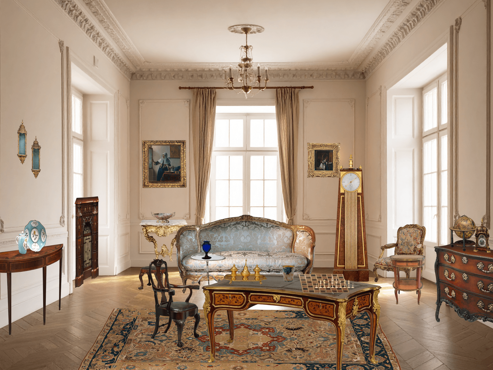
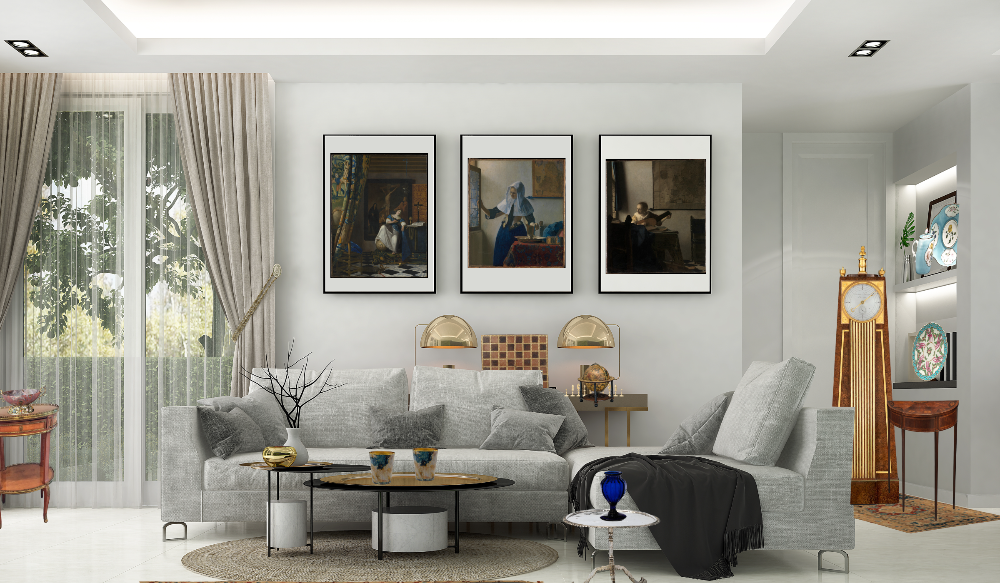
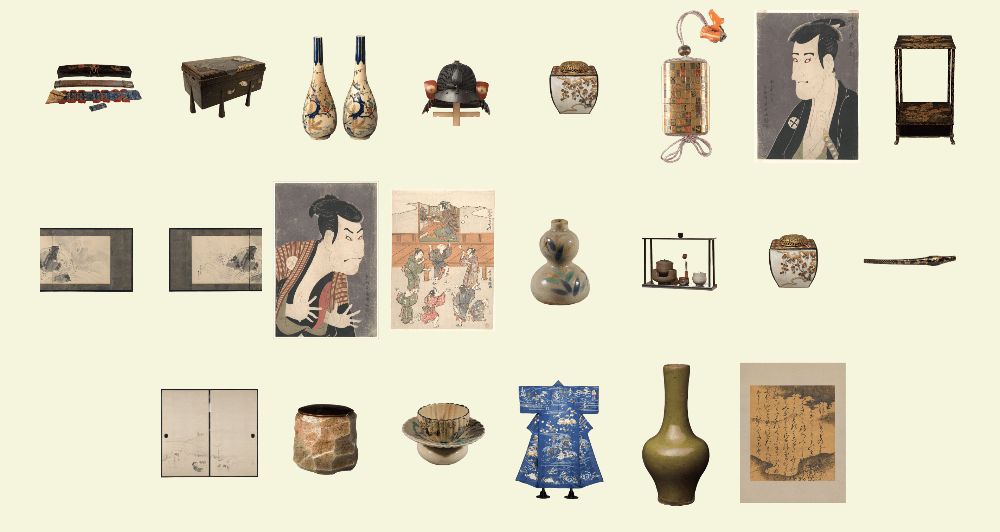
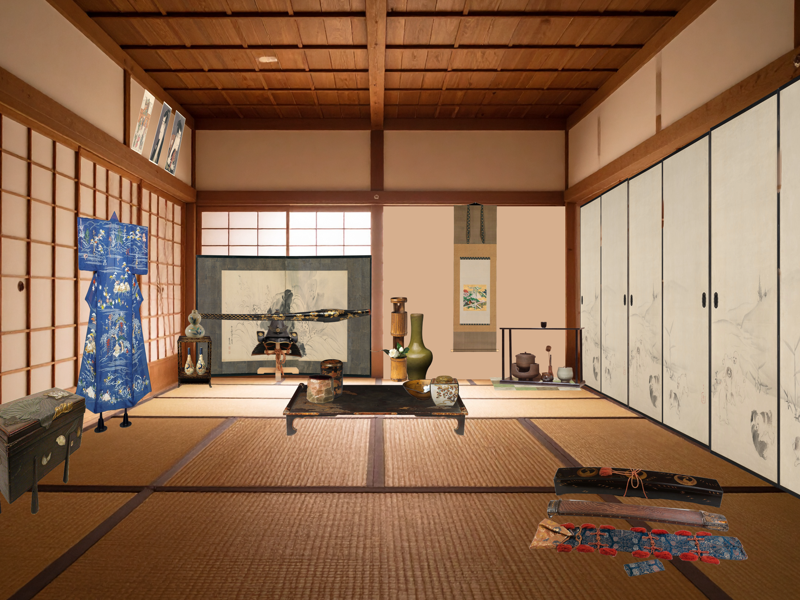
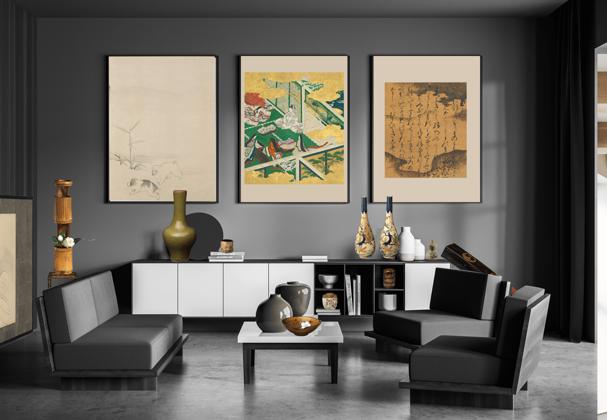
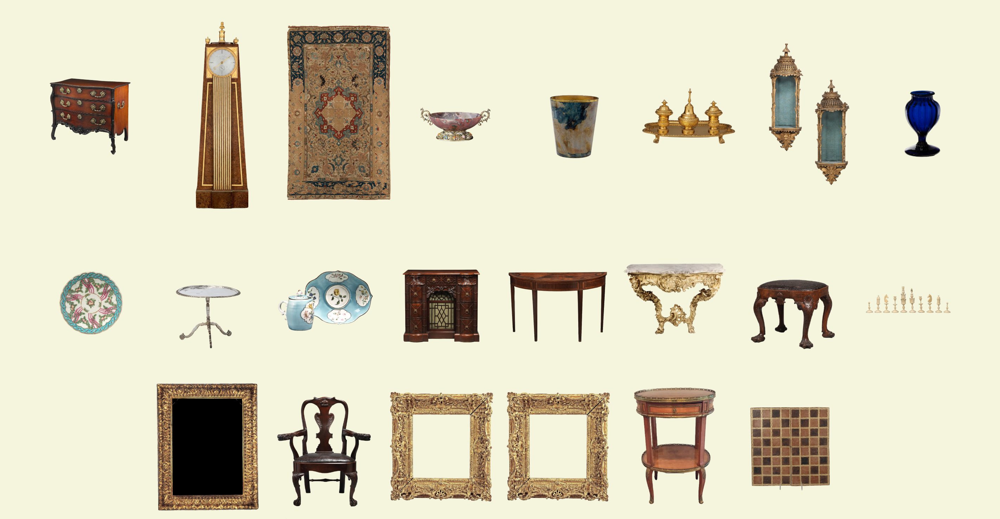
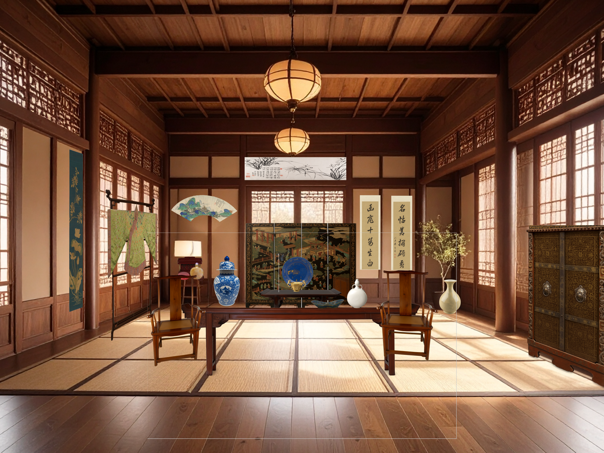
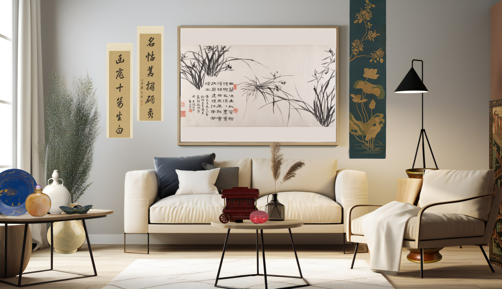
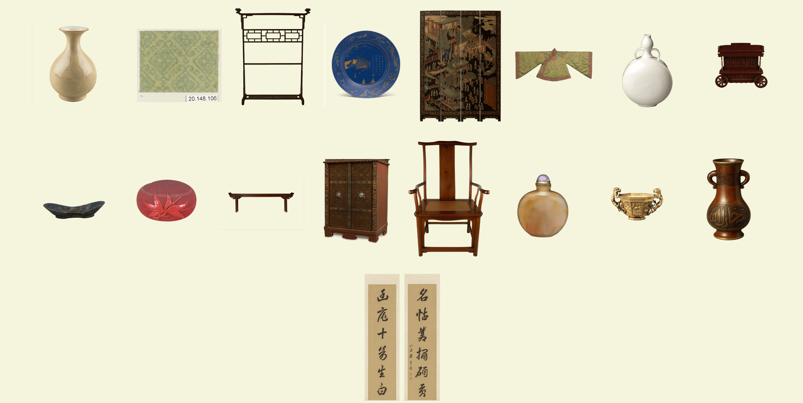

Art
×Interior
ARTINTERIORARARTINTERIORARARTINTERIORAR
コンセプト
現代の部屋を美術品で飾る
ヨーロッパ

AD1600~AD1800のヨーロッパ
1600年から1800年にかけてのヨーロッパではバロックやロココ様式がはやりました。
バロック様式は華美な装飾でロココ様式は繊細優美です。
ロココ様式の家具が多くあります。ロココ様式のインテリアは華麗な装飾と繊細なデザインが特徴です。

現代風
落ち着いた部屋と美術品
家具にゴールドが使われていて色合いがヨーロッパのインテリアと馴染みました。落ち着きあるエレガントな部屋はヨーロッパの優雅さや繊細な装飾と合わせやすいです。


飾りたいアート
水差しを持った女性
作品紹介
作者ヨハネス・フェルメール
真珠飾りの少女を有名なヨハネスの作品です。画面がきれいに分割でき、また女性はきれいな三角形のシルエットを表しており存在するものすべてが計算された配置で描かれている。ヨハネスの象徴的でもあるフェルメールブルーが使用されている。
青に存在感があり映えます。澄んだ透明感ある雰囲気になります。
日本

AD1600~1800の日本
1600年から1800年にかけて江戸の日本では書院造、数寄屋造りなどの様式がありました。
書院造は武家が使用するため格式重視で数寄屋造りは茶人が使用するため自由な空間でした。
どちらも簡素なデザインです。
数寄屋造りの美術品を多く配置しています。
数寄屋造りは繊細なデザインと自然素材を多用しています。

現代風
シックな部屋と美術品
黒が美術品の金の華やかさ、自然素材を引き立てています。シックでシンプルな部屋は日本の華やかさと上品さに合います。

飾りたいアート
玉鬘
作品紹介
土佐光吉による源氏物語の一場面です。源氏と女性たちが衣を箱に収めています。夫婦円満の象徴である鴛鴦が泳いでいます。
金の雲が映えます。飾ると華やかで気品ある雰囲気になります。
中国

AD1600~1800の中国
1600年から1800年にかけての中国は明代家具や清代家具などがありました。 明代家具は簡素で機能美を重視し、清代家具は豪華で見栄えを重視しました。 清代家具を多く配置しています。清代家具は華美で植物や動物のモチーフが描かれました。

現代風
ナチュラルな部屋と美術品
白が美術品の鮮やかさを引き立てています。ナチュラルな部屋は中国の美術品を邪魔せず、明るい雰囲気にします。


飾りたいアート
蘭と竹
作品紹介
作者は鄭謝で50歳の官職の時に描かれました。蘭は忠誠心と正当に評価されない美徳の象徴、竹は強くて柔軟な優れた男性の象徴であり隠居生活と自然への回帰という理想を称しています。
飾ると筆の力強さからエネルギーをもらったり趣を味わえたりします。部屋の雰囲気が引き締まります。